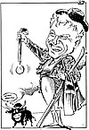

|
Dagens Inge:  Inge-galleri Tidligere artikler |
Dagens ledere Morgen: Clinton i 1. runde Parodisk |
Aften: SV langt unna makt |
|
Kommentar Litauisk forskning under norsk lupe ISOLERT: Norges forskningsråd har vurdert Litauens vitenskaps- miljøer. Rapporten dokumenterer sovjetsystemets forødende virkning. AASMUND WILLERSRUD Artikkelforfatteren er utenrikskommentator i Aftenposten.
Hvem skal leke Gud i helsevesenet?
|
I dag Norske historikere DET NASJONALE: Dominerende ledetråd helt til i dag, må snart vike plass? GEIR LUNDESTAD Direktør ved Nobelinstituttet, professor i historie ved UiO. |
|
|
Kronikk Likvideringer i Norge 1941-1945 INGER CECILIE STRIDSKLEV Hittil har man regnet med at i alt 65 mennesker ble likvidert av hjemmefronten i krigstidens Norge: Inger Cecilie Stridsklev har foretatt en grundig undersøkelse av dette, og er kommet til at tallet på sannsynlige likvidasjoner kan være rundt 150, men sikre konklusjoner kan ikke trekkes. Det er på tide at også vi - som danskene - reiser spørsmål om dette, mener kronikøren, som er lege og har utført endel forskning på emner fra krigstiden. |
||